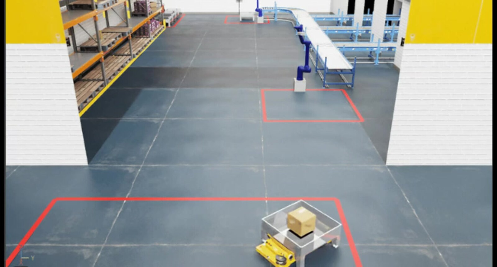
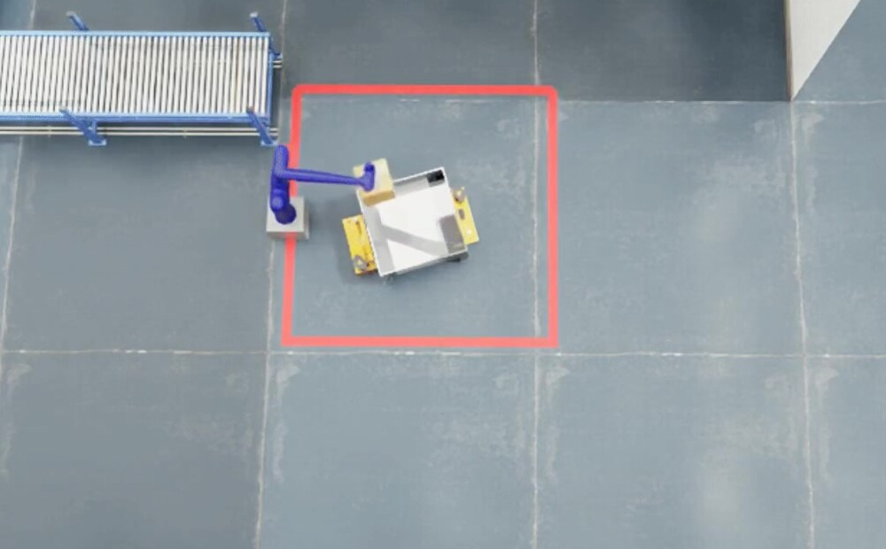

Project 3 · Digital Twin
SortTwin
AMR이 가져온 박스를 협동로봇이 카메라로 찾아 집고, 컨베이어로 분류하는 공정을 Isaac Sim에 구현

1 미션입고 → 분류 한 흐름으로 연결
8 단계Pick & Place 상태 기계
3 단오검출 필터(거리 · 색 · 높이)
01무엇을 만들었나
입고 AMR이 박스를 싣고 오면 P3020이 RGB-D 카메라로 박스를 찾아 컨베이어에 올리고, 컨베이어가 분류해 불량 박스는 출고 로봇 앞까지 보내는 공정입니다. 전부 Isaac Sim 안의 디지털 트윈으로 돌아갑니다.

02내가 한 일
- P3020 입고 Pick & Place — 8단계 상태 기계, Lula IK, 로봇 위치는 USD에서 읽어 자동 반영.
- Vision 연동 — 검출 픽셀 좌표와 깊이 값을 3D 좌표로 바꾸고 거리 · 색 · 높이 3단 필터로 오검출 제거.
- 반복 처리 — 화물이 빌 때까지 반복하고, 5초 미검출이면 AMR을 복귀시키는 규칙.
- 출고 첫 버전 — 입고 코드를 재사용해 출고 로봇의 첫 버전을 작성(이후 보완은 팀장).
03막혔던 문제와 해결
상황
Isaac Sim 쪽과 ROS 2 쪽 코드가 같은 메시지 타입을 두고 서로 읽지 못했습니다.
원인
Isaac Sim은 Python 3.11, ROS 2 Jazzy는 Python 3.12로 돌아가 사용자 정의 타입이 맞지 않았습니다.
해결
Docker · 내장 라이브러리 재빌드는 보류하고, 액션 서버를 별도 프로세스로 분리한 뒤 표준 타입 토픽 2개로만 주고받게 했습니다.
결과
두 환경을 그대로 두고도 한 미션이 끊기지 않고 이어졌습니다.
04배운 점
- 좌표계 차이는 통합 단계에서야 드러나므로 센서 · 로봇 좌표 기준을 먼저 맞춰야 합니다.
- 환경을 억지로 맞추기보다 경계를 단순한 표준 타입으로 두는 쪽이 빠르고 안정적일 때가 있습니다.